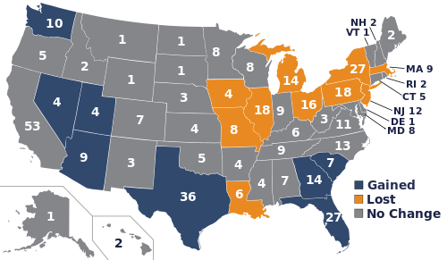

The two branches of Congress
Congress is bicameral, meaning it is made up of two separate chambers, the House of Representatives and the Senate. The House as it is commonly referred to, has representation for each state based on a census done every 10 years. This means that the 435 allocated slots and re-appropriated every 10 years with the assumption every member shall represent roughly 700,000 people. The senate meanwhile is made up of 100 senators, 2 from each state. The reason for the dual chambers stems from a historic compromise known as the Connecticut compromise, which guaranteed states with both large and small populaces would have fair representation.
Table View
| State | Number of Representatives |
|---|---|
| Alabama | 7 |
| Alaska | 1 |
| Arizona | 9 |
| Arkansas | 4 |
| California | 53 |
| Colorado | 7 |
| Connecticut | 5 |
| Delaware | 1 |
| Florida | 27 |
| Georgia | 14 |
| Hawaii | 2 |
| Idaho | 2 |
| Illinois | 18 |
| Indiana | 9 |
| Iowa | 4 |
| Kansas | 4 |
| Kentucky | 6 |
| Louisiana | 6 |
| Maine | 2 |
| Maryland | 8 |
| Massachusetts | 9 |
| Michigan | 14 |
| Minnesota | 8 |
| Mississippi | 4 |
| Missouri | 8 |
| Montana | 1 |
| Nebraska | 3 |
| Nevada | 4 |
| New Hampshire | 2 |
| New Jersey | 12 |
| New Mexico | 3 |
| New York | 27 |
| North Carolina | 13 |
| North Dakota | 1 |
| Ohio | 16 |
| Oklahoma | 5 |
| Oregon | 5 |
| Pennsylvania | 18 |
| Rhode Island | 2 |
| South Carolina | 7 |
| South Dakota | 1 |
| Tennessee | 9 |
| Texas | 36 |
| Utah | 4 |
| Vermont | 1 |
| Virginia | 11 |
| Washington | 10 |
| West Virginia | 3 |
| Wisconsin | 8 |
| Wyoming | 1 |